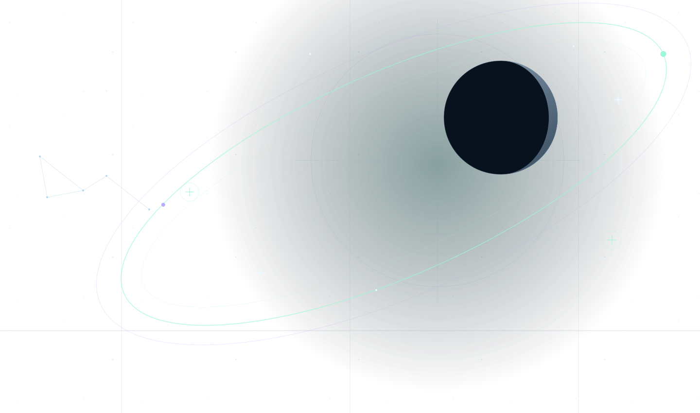

NIGHT SIGNAL
Fictional event · no booking or ticket is created
Choose your way into the night
Start with the horizon, try an instrument, or spend a whole evening looking deeper. A few sessions overlap; your itinerary helps you choose a clear path.
Friday 6 November
3 sessions · local timeFind north
45 minutes · Field circle · Mara Vale
Read the horizon, find Polaris and build a first map of the night. Start here if the sky feels unfamiliar.
A binocular atlas
60 minutes · East lawn · Theo Reed
Follow a small trail of stars through borrowed binoculars. Learn how to steady the view and keep both eyes open.
Beyond the naked eye
75 minutes · Scope line · Imani Cross
Take turns at three telescopes and compare what a wider aperture reveals. Leave with a few objects you can find again.
Saturday 7 November
3 sessions · local timeLunar sketchbook
60 minutes · Moon table · Kit Rowan
Turn a close look into a simple drawing. Compare light and shadow along the Moon’s edge with pencils and a shared scope.
Your first telescope
60 minutes · Scope line · Imani Cross
Try a finder, change an eyepiece and practise focusing. A patient introduction before your first solo look.
Deep sky circle
90 minutes · Field circle · Mara Vale
A slower final session for clusters, distant light and questions. Share a telescope, a field note or simply the view.
Meet at the edge of the light
- The field
- Ridgefield Common is our imagined open-sky meeting place. The Field circle, East lawn, Scope line and Moon table are fictional stations on the same common.
- What to bring
- For this imagined weekend: a warm layer, comfortable shoes and a red-light torch if you have one. Shared equipment means you can begin with empty hands.
- If skies close
- The fictional programme would move to table demonstrations and star maps under cover. The planner uses the published session times; it does not provide weather or availability updates.
- Your plan
- Choose compatible sessions, add a field note and prepare a chronological itinerary. Keep it in this browser or download the exact text to take with you.
There is more than one good night here
Find mine